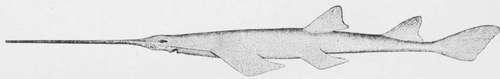

Fly-Fishing In Salt-Water
Description
This section is from the book "American Game Fishes", by W. A. Perry. Also available from Amazon: American Game Fishes: Their Habits, Habitat, and Peculiarities; How, When, and Where to Angle for Them.
Fly-Fishing In Salt-Water
" The pleasant'st angling is to see the fish Cut with their golden oars the silver stream, And greedily devour the treacherous bait."
- Shakespeare.
Which seems to mean fly-fishing, and as the poet lived near the "Soft-flowing Avon," he probably was an angler. In fact there are many passages in his plays to show his familiarity with the art.
But to return to Mosquito Inlet. As the season advanced the weather grew warmer, and some of the southern fishes were seen feeding upon the Mullet. The Cavalli and Lady-fish, and near the Inlet, the Tarpum showed his vast and brilliant form on the surface, leaping and rolling in the tideways.
So one morning the major and I, with our host, started to look after these new-comers. We dropped down with the tide, then about three-quarters ebb, and crossed the river to the mouth of a large creek about half a mile from the house. In the middle, the water was shallow, but on the north side the channel was eight or ten feet deep and ran strongly, near the bank. Having procured a dozen Mullets with the cast-net, we anchored in mid-channel, the tide beginning to set np the creek. I had brought with me a twelve-ounce fly-rod, made of greenheart by Scribner, of St. John, with which I had killed many heavy Trout in New Brunswick. It was a spliced rod about eleven feet long, and carried a click reel with fifty yards of silk line, a six-foot leader, and a large red-and-white Bass-fly. The major was using one of my chum rods, and dropped his hook over the stern. P. sent his big hook and half a Mullet well out into the stream, and I cast about thirty feet astern, sinking the fly six inches in the water, and then drawing it up-this for some time without result. Now the major hooks what he supposes to be a Bass, but it proves to be one of those active sea Cat-fishes, sometimes called from its high dorsal fin, "The Gaff-topsail"- a clean-built, handsome fish, blue and white in color, and fighting long and hard on the hook. Like all the Cats, it is covered with a nasty slime, which adheres to hands and tackle; and it is also armed with sharp and poisonous serrated bones in the pectoral fins, which inflict painful wounds on the incautious.
"When these Cats appear, it is a sign of warm weather," said P., as he unhooked the fish; then he slashed it open with his knife, bringing out a bunch of eggs, in form and color like golden grapes; "I always kill them, so that they can't bite again," said he.
Judge: "Is it good eating?"
"Well, we don't eat them, we have so many better fish; out the meat looks white and nice enough."
Presently I have a rise, and hook a Salt-water Trout of three pounds, which gave very good play for five minutes, bending my pliant rod till P. declared it must break; but the fish was brought safely to the net. At the next cast I got a four-pounder; while playing it, the major was engaged in combat with a good Bass, which he boated-a six-pounder. "That's the kind I want; no more Cat-fish for me," said he. My fish was saved also.
The tide was now in full flow, and with it came a school of Cavalli, snapping and leaping after a school of Menhaden. P. hooked one of about three pounds, and hauled it in quickly, after the manner of hand-line fishermen.
"That's the first Cavalli I have caught this year, judge; there's plenty more; you've got one."
And so I had; it sprang up into the air, ran out twenty yards of line, circled round the boat, and cut up many capers for a few minutes, but when boated was dead. We got three more of about the same size, and the major lost one, before the school went by. We could see them for a long distance, chasing the Menhaden, and driving them ashore, where they were picked up by a flock of gulls, ospreys and pelicans. Next came along a school of Lady-fish, also hunting the poor Menhaden and Mullets. The first that took my fly came out of the water four feet, and three times at that; then darted under the boat, and up in the air again, shaking out the hook. Both P. and the major were engaged in like manner with two silvery harlequins, which seemed to stay in the air half the time. As long as the school of fish remained near us, we had fine sport and got five or six of them, averaging two pounds in weight; but they soon went off up the creek in pursuit of their prey.
P. : "What do you think of Lady-fish, major?"
"I should call them flying-fish, myself."
Judge: "It is the greatest jumper I ever saw, and I have caught some pretty active fish in my time; how is it for eating, Pacetti?"
"Not good for much-mostly bones."
Here he found himself fast to a big Sting-ray, from which he cut his line loose; and next the major struck a large Bass, which proved too much for him, and broke away after a few minutes.
"I saw him, judge," said he; "he was a big one." P.: "The one that gets away is always the big one.'
Saw-Fish (side view)-Pristis pectinatus.
Major: "To be sure it is; the little ones can't break the line."
I now had a twitch at rny fly, under water, and struck something heavy, and gave it thirty yards of line before it stopped-then it returned toward the boat, showing itself on the surface. So we had it, back and forth, for about ten minutes, giving and taking line, till the Bass showed his red sides on the water, and it was reeled in within reach of the gaff-a ten-pounder.
'"Pretty well, that, for a fly-rod; I never did think it could be done," said Pacetti. "Hullo! there's a turtle," and he made a dash over the side of the boat with the landing-net, and secured a small green turtle of about six pounds weight. "That will make a nice stew; we haven't had one since you came, judge." My next fish was a Sea-Cat, which made a sturdy fight, worthy of a Bass or a Trout. Then the major got a Salt-water Trout of three pounds.
Continue to:
- prev: The Lady-Fish Or Bone Fish-Albula Vulpes (Goode), Albula Conoryhnchus (Gunther)
- Table of Contents
- next: Fly-Fishing In Salt-Water. Continued